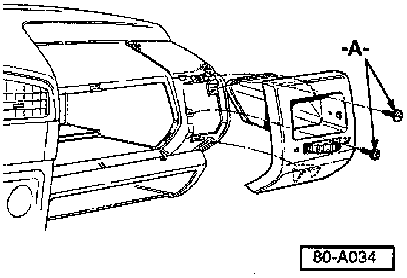

A/C - Buzzing Noise From Right Side Air Outlet
Group: 80Number: 96-02
Date: Oct. 25, 1996
Subject:
Buzzing Noise From Right Side Air Outlet
Model(s):
Golf, GTI, Jetta 1997 -->
Condition
Buzzing noise / vibration from right side air outlet while driving.
Service
Condition may be caused by the outlet mounting screws.
If a vehicle exhibits this condition:

- Replace mounting screws -A- with
Part No.: N 904 484.01
When procedure applies to vehicles within warranty use the following:
Part Identifier: 8555
Labor Operation: 8555110 20 TU